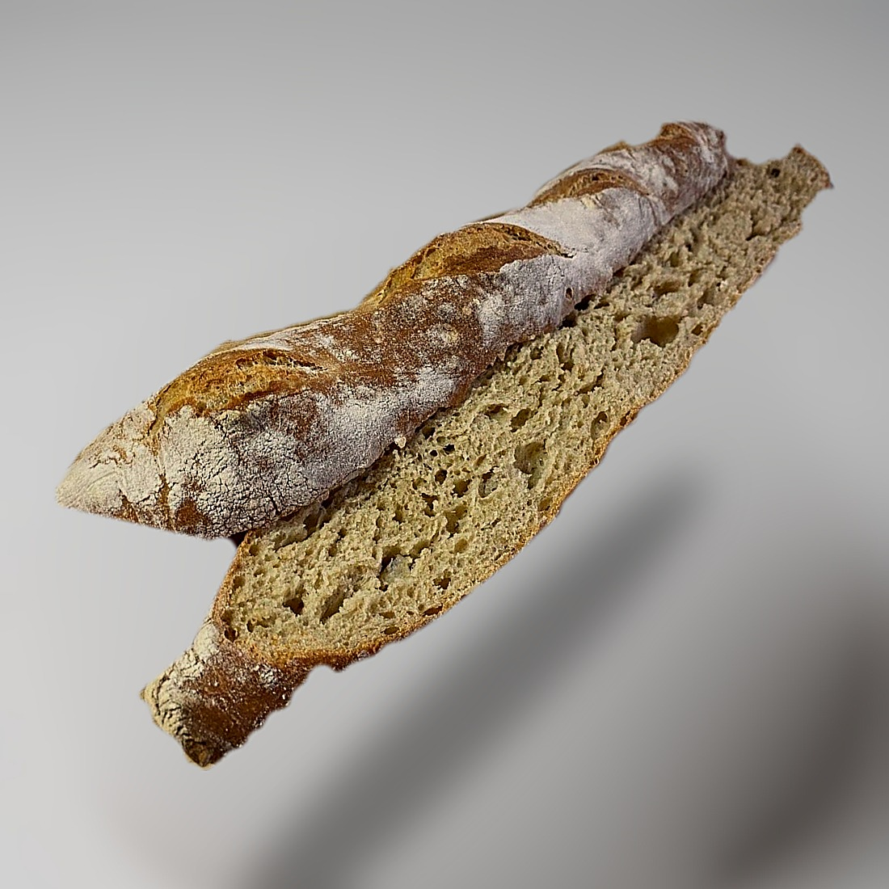

Baking / Bread
Sourdough Baguette

- Yield
- 6 baguettes, or 3 Italian loaves
- Active Time
- 15 min
- Rest
- 1.5 h bulk, then 1.5-2 h shaped
- Total Time
- about 4 h 45 min
- Oven
- 450F, about 25 min
- Source
- King Arthur Baking, kingarthurbaking.com/recipes/sourdough-baguettes-recipe
- Energy Cost
- $1.89 (25 min bake plus 30 min, 3.5 kW at 59 cents/kWh)
Ingredients
Batch
- Water, lukewarm: 283 g
- Sourdough starter, ripe or discard: 481 g
- All-purpose flour: 540-600 g
- Table salt: 15 g
- Granulated sugar: 2 tsp
- Instant yeast: 1-2 tsp, depending on how vigorous the starter is
- Vital wheat gluten: 4 tsp
Method
- Combine the water, starter and 360 g of the flour until smooth.
- Stir in the salt, sugar, yeast and gluten, then another 180 to 240 g of flour. Stop as soon as the dough pulls from the bowl sides. A slack, sticky dough gives a lighter loaf, so resist adding more.
- Knead about 7 minutes in a mixer, or 8 to 10 by hand on a greased surface.
- Rise in an oiled covered bowl until doubled, about 1.5 hours.
- Deflate gently and divide into 6 for thin baguettes, or 3 for thicker Italian loaves.
- Shape each into a 16 inch loaf. Space at least 4 inches apart on parchment, or use baguette pans and make them 15 inches.
- Cover with greased plastic and rise 1.5 to 2 hours until puffy. Heat the oven to 450F toward the end.
- Slash three diagonals about 1/4 inch deep. Skip the slashing if you want taller, rounder loaves.
- Bake about 25 minutes to a rich golden brown, with steam if you can.
- Turn the oven off, crack the door a few inches, and leave the loaves in to dry the crust.
- Cool completely on a rack.
Notes
- 481 g of starter against 540-600 g of flour is a very high proportion, which is why it still carries instant yeast for reliability.
- Vital wheat gluten is doing structural work here, compensating for all-purpose rather than bread flour.
- Keep the dough slack. Flouring it up to something comfortable costs you the open crumb.
- The oven-off, door-cracked rest is what keeps the crust crisp rather than softening as it cools.
- Store in paper, not plastic. Paper preserves the crust.
- This is King Arthur's written Sourdough Baguettes recipe. The video linked was their "Artisan Sourdough Baguettes", a different title from the same publisher, so treat the quantities here as the written version rather than a transcript of the video.
Learnings
Not made yet.